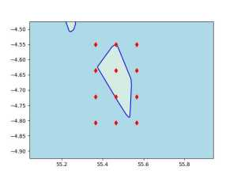

OSM Haritaları, PBF Dosyaları, En Kısa Yol, Djikstra
Eğer yollar ağını içeren OSM haritasını kendimiz işleyip çıktı
dosyalarını rahat okunabilir düz CSV formatında tutmak istersek bu
mümkündür. Sonuçta OSM dosyaları [1] sitesinde bedava paylaşılıyor, ve
bahsedilen işlemi yapabilecek bir kod Rust [5] ile yazılmış
osm4routing kodudur. Amacımız iki nokta arasında bir kısa yol
algoritması yazmak olacak.
osm4routing kurmak için
cargo install osm4routing
Örnek olarak Şeysel (Seychelles) adalarına bakalım, ufak bir dosya
olduğu için örnekleri göstermek işletmek hızlı olur. Haritası Afrika
dizini altında, oradaki osm.pbf dosyası indirilir. $HOME/Downloads
altında olduğunu farzedelim,
osm4routing $HOME/Downloads/seychelles-latest.osm.pbf
Program oldukça hızlı işler, bitince iki tane dosya, edges.csv ve
nodes.csv üretilmiş olmalı. İçeriklerine bakalım (ilk birkaç satır),
! head -10 nodes.csv
id,lon,lat
5766693114,55.2028362,-3.7270749
2737905006,55.694301599999996,-4.3259219
2710742974,55.4645328,-4.6004604
6808483052,55.462411599999996,-4.632185799999999
8979383052,55.518222699999995,-4.716342399999999
9144642426,55.4628521,-4.5883534
6407473046,55.4584707,-4.6071178999999995
8979071049,55.4408661,-4.624990299999999
3789265673,55.401677899999996,-4.6558733
! head -3 edges.csv
id,osm_id,source,target,length,foot,car_forward,car_backward,bike_forward,bike_backward,train,wkt
26771422-0,26771422,293645412,1159221829,113.98597980501721,Allowed,Secondary,Secondary,Allowed,Allowed,Forbidden,"LINESTRING(55.7601390 -4.3462977, 55.7602171 -4.3463866, 55.7602852 -4.3464620, 55.7603906 -4.3466138, 55.7604949 -4.3467581, 55.7605343 -4.3468123, 55.7605801 -4.3468621, 55.7606248 -4.3468929, 55.7606791 -4.3469152, 55.7607355 -4.3469237, 55.7608292 -4.3469269, 55.7608735 -4.3469255)"
26771422-1,26771422,1159221829,2330448860,71.52456370873085,Allowed,Secondary,Secondary,Allowed,Allowed,Forbidden,"LINESTRING(55.7608735 -4.3469255, 55.7613600 -4.3469271, 55.7614284 -4.3469290, 55.7614753 -4.3469333, 55.7615168 -4.3469417)"
Çizit (graph) teorisi açısından bakarsak üstte veri bir ağ / çizit
yapısı var, ilk dosyadakiler düğümler (nodes) ikincidekiler ise
kenarlar (edges). Düğümler yeryüzünde bazı noktalar, bir durak
olabilir, yol ağzı olabilir, ya da yol üzerindeki bir nokta. Her
düğümün bir id kimliği var, ve bu id ile o noktanın kordinat
değerlerine enlem boylam üzerinden erişebiliyoruz. Kenarlar bir düğümü
bir diğerine bağlayan yollar gibi görülebilir, bağlantı parçaları. Her
kenarın da bir kimliği var, ve ayrıca çıkış noktası source bitiş
noktası target bilgisini taşıyor. Bu iki kolon tabii ki düğüm
verisindeki id değerlerine tekabül ediyor, kenar bir düğümden çıkıp
diğerinde bitiyor.
Kenarların, yani yolların taşıdığı bazı ek önemli bilgiler var; mesela
bir yolun yürümeye elverişli olup olmadığı (foot kolonunda Allowed
değeri var ise), aynı şekilde araba, bisiklet kullanımına uygun olup
olmadığı yol bilgisi içinde mevcut.

Veri Yapisi, Tasarimi
Kisa yol algoritmasi isletmek icin bize neler lazim? Yol tarifi isterken bir baslangic ve bitis noktasi enlem/boylam olarak verilir, bu iki noktanin OSM dugum noktalarina eslenmesi gerekiyor, aynen [3] yazisinda oldugu gibi once verilen kordinatlara en yakin OSM noktasi bulunur, ve oradan sonra dugum, kenar, sonraki dugum vs diye yol arama algoritmasi isleyebilir.
Fakat "en yakın nokta bulmak" performans acisindan o kadar kolay bir is degil; örnek olarak burada ufak veri kullandık ama mesela TR boyutunda bir haritada milyonlarca nokta ve onların arasında bağlantı olacaktir. Milyonlarca satır içinden en yakın olanını bulmak eğer tüm verilere teker teker bakılıyorsa uzun sürebilir.
İlk akla gelebilecek çözüm QuadTree, KDTree gibi seçenekler, bu çözümlerin çoğu bellek bazlı işler; etrafta bulunabilecek mevcut kodlar milyonlarca veri noktasını alıp bir indislenmiş ağaç yapısı oluşturabilir ama bunu veri yapısını hafıza tuturak yapar. İdeal olarak nokta bulmak, kısa yol hesaplama algoritmasının ufak bilgisayar üzerinde işleyebilmesi tercihimiz (bir ağaç yapısını hafızaya diskten geri aldığımızda gigabayt seviyesinde olmamalı). Eğer ağır işlem bedeli ödenecekse onun baştan, veri hazırlığı evresinde ödenmesi daha iyi olacaktır.
[devam edecek]
Kaynaklar
[1] http://download.geofabrik.de/index.html
[2] ../../2016/11/yol-tarifi-harita-bilgisi-osrm-backend.html
[3] ../../2023/04/yol-bolmak-osm-osmnx.html
[4] https://github.com/Tristramg/osm4routing2
[5] Rust
[6] Python Sözlük (Dictionary) Veri Yapısı
[7] Dijkstra Algoritması ile En Kısa Yol
[8] University of California Bilgisayar Bilim Kodları
Yukarı